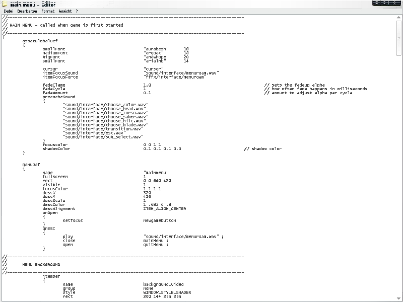
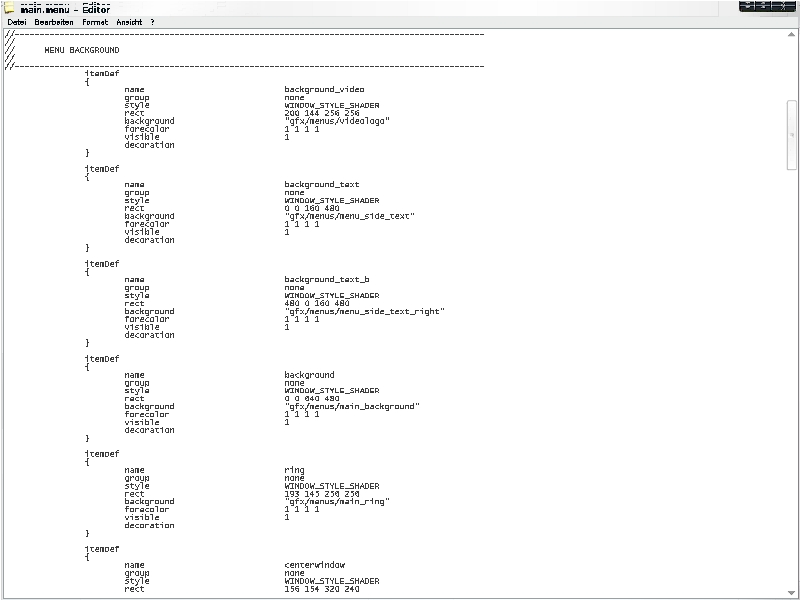
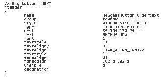

>> Mapping Academy - Tutorials <<
(c) 2004 www.darth-arth.de
Menü Coding - Die ersten Schritte
Author: Biki (Benjamin K.)
VORAUSSETZUNGEN:
>> einen installierten Editor (wie Notepad oder Wordpad) <<
>> WinRAR (download)<<
In dieser Lehreinheit (Tutorial) lernen wir die wichtigsten Befehle und Eigenschaften des Menü Codings kennen.
In den Nachfolgenden Lehreinheiten schreiten wir dann zu fortgeschrittenen Methoden und Funktionen hin!
Ein kleines Wort vorweg: Menü Coding ist nicht schwer, und vor allem nicht so schwer wie die ersten Schritte im Scripten.
Ich, z.B. habe mir das meiste Wissen dadurch angeeignet, indem ich einfach mal in die Dateien geschaut habe! It's that easy!
Der erste Schritt, den wir erledigen müssen, wird sein, aus assets1.pk3
den "UI" Ordner zu entpacken (mit WinRAR). Dazu erstellt ihr am besten ein eigenes
Verzeichnis im /GameData/ Verzeichnis und kopiert den Ordner dort hinein.
Anschließend öffnen wir die "main.menu" Datei mit einem Text-Editor wie Notepad!
Wenn ihr sie geöffnet habt, sollte das wie folgt aussehen:

Den Abschnitt, der im Bild gezeigt wird, sind die Allgemeinen Optionen des Menüs - die man in jeder anderen Menü Datei auch findet!
Als erstes sollten wir mal die wichtigstens Eigenschaften und Befehle aufzählen und beschreiben:
assetGlobalDef - Definiert Einstellungen, die für das gesamte Menü gelten (Laden, Speichern, Neues Spiel etc... )
menuDef - Gilt jeweils nur für das aktuelle Menü.
- name - Definiert den Namen der Datei (MERKE: Nicht, wie die .menu datei heißt, sondern wie die Datei vom Spiel aus ansprechbar ist)
- fullscreen (Vollbild) - immer auf 1 (es sei denn, ihr wollt ein Fenster, was nur die hälfte des Bildschirm einnimmt, o.ä.)
- rect (Position) - Wohl eine der wichtigsten Befehle. Rect gibt die Position an, wo der Text steht, der Button ist, usw... In dem Fall (sofern bei fullscreen 1 angegeben ist, ist die rect "0 0 640 480". Doch später mehr zu dieser Funktion!
- descX, descY - Gibt die Position der Beschreibung des jeweiligen Buttons an. (z.B. man geht mit der Maus über "Neues Spiel". Dann erscheint unten in der Mitte "Starte ein neues Spiel mit Jaden", oder sowas... )
- descScale - die Größe der Beschreibung.
- descColor - die Farbe der Beschreibung.
- descAlignment - die Ausrichtung der Beschreibung (Rechts, Mitte, Links; immer in englisch angeben)
Anschließend kommen noch spezielle Befehle (onOpen, onESC), die jedoch auf außerhalb des sog. "Headers" (Dem Allgemeinem Bereich) vorkommen. Das ist allerdings schon fortgeschritten, deswegen in den Nachfolgenden Tutorials mehr dazu!
Nachfolgend zum "Header" folgt der mit "MENU BACKGROUND" kommentierter Bereich. Auch diesen werdet ihr in allen Menü Dateien finden (jedenfalls in den meisten).
Hier wird schon mehr definiert und es kommen auch gleich ein paar neue Befehle vor. Also auf geht's:

Und nun erstmal wieder die Erklärung der (neuen) Befehle:
- group - Sehr nützlich um mehrere Elemente in eine Gruppe zu fassen, um sie einfacher anzusprechen (siehe Radiant ;) )
- style - So 100%ig sicher bin ich mir nicht, jedoch verknüpft sich das irgendwie mit den von Windows definierten Arten (bla...)
- background - Falls ein Bild im Codeblock definiert wird, so gibt man mit "background" den Pfad an.
- forececolor - die Farbe... (Farbcodes siehe unten)
- visible - Gibt an, ob der Block angezeigt werden soll, oder nicht. (Kann auch später noch per Befehl angezeigt werden... siehe nächste Tuts.. )
- decoration - Falls du das als letztes schreibst, kann man den Block im Spiel nicht anklicken (bzw. es passiert kein Hover-Effekt etc.. )
Das war's erstmal hierzu. Jetzt widmen wir uns zum Schluß noch den wichtigen Dingen ;) Genau.. einem Button.
Mit Buttons kann man in JKA viel erreichen, man kann ein Neues Spiel starten, man kann ein Spiel Laden etc...
Hier ein Beispiel:

Danken wir Raven, dass sie auch so schön jeden Block kommentiert haben ;)
Erstmal wieder der theoretische Teil (gibt es überhaupt einen praktischen Teil?... ):
- type - Definiert die Art, was wir hier gerade coden... (im Beispiel ein ITEM_TYPE_BUTTON = Button)
- text - Der Text, den der Button anzeigen soll (Starten, Laden, etc.. ). Entweder per "@" eine string-Datei ansprechen oder einfach "Text" schreiben.
- font - die Schriftart (von 1 - 4)
- textscale - die Textgröße.
- textaligny - bisher unklar
- textalign - s.o. (Left, Middle, Right)
- textstyle - bisher unklar
- textalignx - bisher unklar
- forcecolor - die Farbe des Textes (wie schon erwähnt, im Anhang ein paar Farbcodes)
Gratulation! Ihr habt den ersten Teil geschafft. Nun beherrscht ihr alle Funktionen, die ihr zum Menü Coden braucht. Oder zumindest die, die ein Anfänger braucht. Erstmal durchatmen, nochmal alles durchlesen und verarbeiten. Und dann kann's weitergehen zum >>NÄCHSTEN TUTORIAL (hier kommt mal ein Link hin)<<
Wer schon gleich loslegen will, kann sich hier einen Überblick über die Farbcodes im JKA-Menü-Coding verschaffen. (Das sind bis jetzt alle, die ich weiß):
- 1 .682 0 1 - Dieses standart-gelb.
- 1 0 0 1 - Rot
- 1 1 1 1 - Weiß
WICHTIG: Bitte immer auf das LEERZEICHEN nach jeder Stelle und die PUNKTE achten!!!